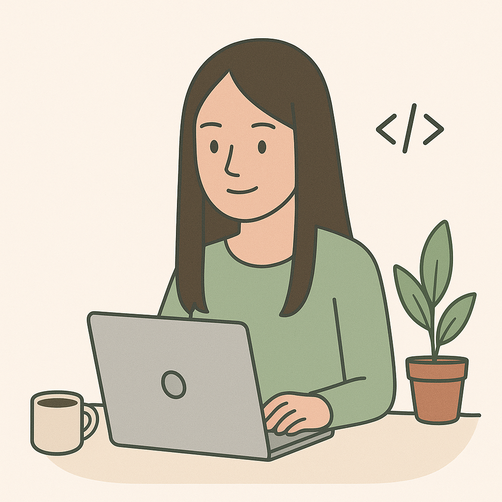

Over mij
Ik ben een 21-jarige beginnend designer en front-end developer. Ik studeer en woon al bijna een jaar in Eindhoven, maar ik kom oorspronkelijk uit Hulst, een stad in de provincie Zeeland.
Op dit moment volg ik de opleiding ICT en Media Design, waarin ik onderzoek hoe technologie en design elkaar versterken om betekenisvolle en gebruiksvriendelijke ervaringen te creëren. Mijn interesse liggen vooral bij het coderen. Ik vind het heel interessant om nieuwe talen/technologieen te leren. Naast mijn studie speel ik volleybal bij studentensportvereniging Tamar en werk ik in het weekend bij de Albert Heijn in Hulst.
Bekijk mijn projecten
